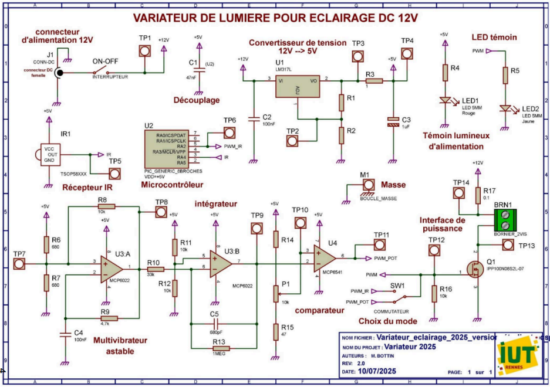
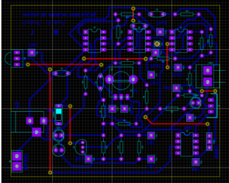
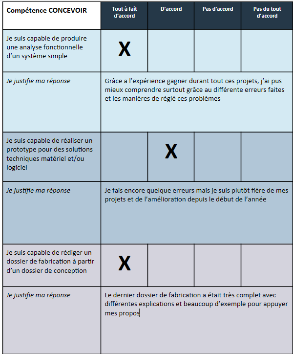
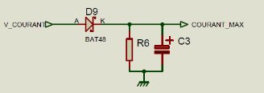
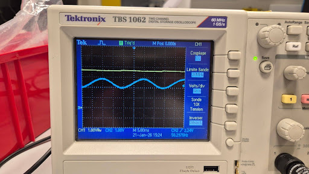
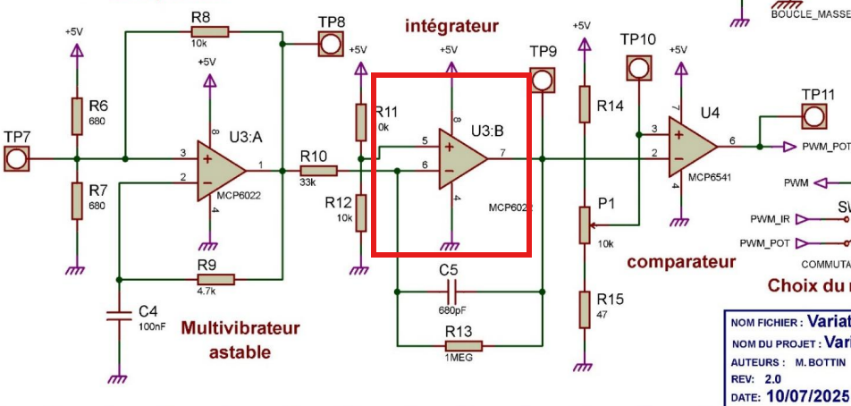
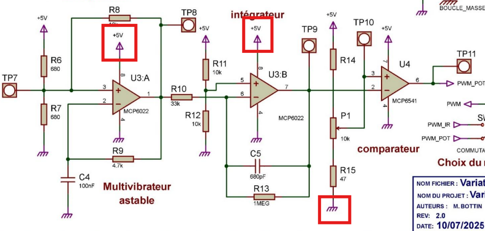
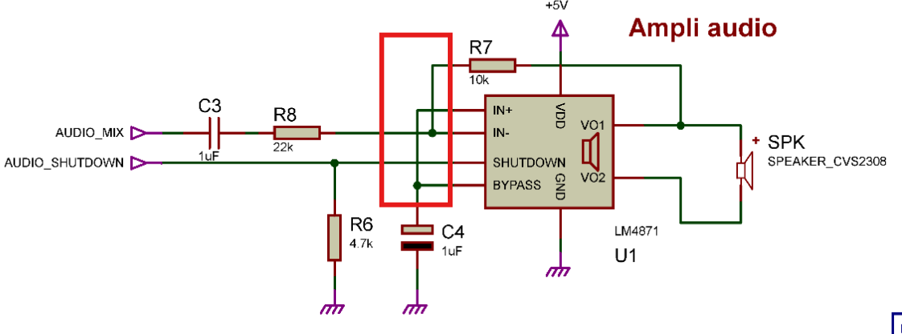
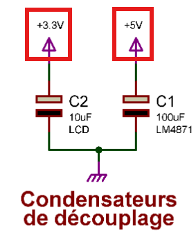

Première année du BUT GEII : acquisition des fondamentaux en électronique, Programmation (Python,Automatisme) et mathématiques.
_Modules suivis
› Cliquez sur un module pour déplier — puis sur une compétence pour voir les projets liés
ConcevoirProduire un analyse / Réaliser un prototype / Rédiger un dossier .
[x]›
Mener une conception partielle d'un projet en intégrant une démarche méthodique de gestion de projet, permettant de planifier, organiser et suivre efficacement les différentes phases de conception.
_Notes & contexte
Cette compétence se décompose en trois sous-parties principales. La première consiste à analyser les besoins et le fonctionnement d'un système afin d'en comprendre les différentes fonctions. La deuxième vise à concevoir et tester des solutions techniques, qu'elles soient matérielles ou logicielles, à travers la réalisation d'un prototype. Enfin, la troisième porte sur la préparation de la fabrication, en rédigeant les documents techniques nécessaires à partir du dossier de conception.
_Compétences (cliquez pour déplier)
Produire une analyse fonctionnelle d'un produit
›
Analyse d'une carte éléctronique
_Rubrique : contexte

La conception d’un produit repose fréquemment sur l’analyse de solutions déjà existantes. Lors de la première SAÉ, nous avons étudié le fonctionnement d’un variateur de lumière pour ampoules halogènes, connues pour leur forte consommation d’énergie. À partir de cette analyse, il nous a été demandé de concevoir un nouveau variateur spécialement adapté aux ampoules LED.
Cette SAÉ nous a permis de débuter dans la conception d'un carte éléctronique.
_Rubrique : résultat
Avec cette analyse nous avons pus comprendre que pour créer un variateur de lumière nous avions besoin dans un premier temps d’une alimentation puis d’un Transistor MOSFET AOD472 (1) pour moduler la tension puis on utilise un régulateur (2) couplé à un AOP(3) Ce qui nous donne un “Comparateur” qui vas pouvoir être utilisé à l'aide d’un potentiomètre pour ainsi faire varier l’intensité lumineuse de l’ampoule.
Grâce a cette analyse nous avons pus réaliser un prototype mais pour une ampoule LED

_Projets en rapport
Réaliser un prototype pour des solutions techniques matériel et/ou logiciel
›
Variateur de lumière›
_Contexte

Le variateur de lumière a été notre premier projet où l'on devait concevoir une carte électronique de toute pièce pour un van aménagé. Cette carte avait pour but de faire varier l'intensité lumineuse d’une ampoule à LED pour économiser le plus d’énergie pour les long voyage avec le van.
(Cliquer sur le lien en dessous pour connaitre plus de ce projet)
_Schéma éléctrique
La première étape pour concevoir la carte éléctronique a était de dessiner le schéma au préalablement donner pour les professeurs sur Proteus

Puis dès que le schéma a était reproduis il a fallut dimmenssioner la carte pour ensuite placer les différents composants de la carte en suivant différent concrainte du cahier des charge

_Conclusion

Il ne nous reste plus cas souder les composants à la bonne place et nous pourrons vérifier le fonctionnement.
(Cliquer sur le lien en dessous pour connaitre plus de ce projet)
Borne de recharge électrique›
_Contexte

Pour ce projet nous nous somme basé sur les bornes éléctriques utilisée sur les parking de l'iut pour recharger tout type de véhicule. Nous avons étudier le borne et nous nous en avons conclu qu'il y avait deux partie a réaliser surle carte, la première a été l'éléctronique de puissance et la deuxième a était de mettre en place la gestion des signaux éléctrique que ce soit pour la sécurité et la charge du véhicule mais aussi de l'interaction homme machine.
_Résultat
Après être passer par toute les étapes de création, du schéma éléctrique jusqu'a la soudure de chaques composants on obtient une borne de recharge fonctionnelle éléctroniquement parlant mais il manque une seul partie qui est la partie signal parler précédment qui est essenteil pour le fonctionnement total de la carte du au fait que c'est cette partie controle la charge de la batterie par l'intermédiaire de la raspberry pi pico (par encore présente sur la photo).

Console rétrogaming›
_Contexte

Pour la spécialité ESE (éléctronique & système embarqué) nous avons du réaliser une console rétrogaming portable qui pourrait s'apparenter à une gameboy. Cette carte est composé d'un système de son, un système d'affichage afin de voir le jeu et bien sur un 6 boutons et un joystick pour jouer au jeu. Toute ces partis sont piloter par une raspberry pi pico 2 programmer avec CircuitPython.
_Conclusion
Il ne nous as rester plus qu'à coder les différent jeu vidéo à notre disposition, le premier a était le jeu Simon qui est un jeu de mémorisation de couleur très connu des années 80, nous avons ensuite codé un deuxième jeu appelé GunfFight qui est un jeu de reflex représentent un duel de cowboy au far west (voir photo)

_Projets en rapport
Rédiger un dossier de fabrication
›
_Contexte
Ce dossier est celui du variateur de lumière, il retrasse toute la progression de notre projet de A à Z en expliquant aussi tout ce que l'on a tiré du projet
Dans ce dossier nous avons du présenter le projets sous différente forme comme par exemple quelque schéma structurelle mais aussi une notice d'u'tilisation de l'appareil.
_Contexte
Ce Compte Rendu c'est basé sur l'étude de filtre passe passe bas et passe haut pour comprendre leur fonctionnement
Ce Compte rendu m'as permis d'apprendre a clarifier mes explication pour être mieux compris par les lecteurs ce qui me sera très benefique a l'avenir.
_Contexte
Ce Compte Rendu ce base sur l'étude d'un filtre universel mais plus précisement du filtre passe bande a l'intérieur et de voir quelle composant peux influencer les caractèristique du filtre.
Ce Compte Rendu ma permis d'apprendre comment mieux présenter mes résultat durant mes test comme parce exemple avec l'utilisation d'Excel pour tracer les différent diagramme de Bode
_Projets en rapport
Tableau d'autoévaluation
›

VérifierAppliquer un procédure d'essais / Identifier un disfonctionnement & Décrire ses effets.
[x]›
Réaliser les essais et les mesures de validation d’un système afin de vérifier son bon fonctionnement, d’évaluer ses performances et de s'assurer qu'il répond aux exigences définies lors de sa conception.
_Notes & contexte
Cette compétence se décompose également en trois sous-parties. La première consiste à mettre en œuvre une procédure d'essai afin de vérifier le comportement du système dans différentes conditions. La deuxième vise à détecter et localiser les dysfonctionnements pouvant affecter son fonctionnement. Enfin, la troisième consiste à analyser les conséquences d'un dysfonctionnement et à en décrire les effets sur les performances et le comportement du système.
_Compétences (cliquez pour déplier)
Appliquer une procédure d'essais
›
_Rubrique : contexte

Durant la saé sur la borne de recharge de véhicule éléctrique différent test on du être fait sur différent point test pour vérifier si la forme du signal est bon et si sa valeur est cohérente.
On étudie ici le redresseur de courant qui permet la charge de la batterie car si le courant alternatif on risque d'endommager la batterie.
_Rubrique : résultat
En regardant sur l'oscilloscope on peut voir que le redresseur à bien était dimmensionner car on voir en entrer (en bleu) que l'on a un signal sinuisoidale est que à la sortie on retrouve un courant quasiment continue (car si on regarde attentivement un peut voir les "bosses" de charge du condensateur) donc ce test est concluant

_Projets en rapport
Identifier un disfonctionnement et le décrire
›
Lorsqu'un prototype disfonctionne, il est très important de comprendre d'où vient le problème mais aussi quelle sont ces "dégâts".
_Rubrique : Première erreur sur le variateur de lumière

Durant les test sur le variateur j'ai remarquer un disfcontionnement très problématique, par inadvertance j'ai ajouter le mauvais composant au moment de la création du comparateur pour gérer l'intensité avec le potentiométre, ce qui m'a value d'avoir un quatrième emplacement pour un circuit intégrer sur ma carte au lieu de trois initialement prévu.
_Rubrique : résultat
Ce composant en trop était un MCP6541 alors que cela devait être le deuxième partie d'un MCP6022, cela à donner pour conséquence de me retrouver avec un signal inutilisable dù a se composant parasite et cela a donc rendu mon variateur inexploitable car impossible d'avoir le bon signal.

_Rubrique : Deuxième erreur sur le variateur de lumière

En poursuivant les tests d'autre erreurs avec le voltmètre, on as pus découvrir que certaint composant n'était pas alimenter ou n'était pas relier à la masse ce qui pouvait soit endommager la carte soit tout simplement ne pas fonctionner.
_Rubrique : résultat
Trois composant n'était pas définie au niveau des fléche pour leur donner la piste par laquelle ils peuvent être alimenter ce qui fait que le MCP6022 n'était pas alimenter ce qui ne permet pas son fonctionnement ininital

_Rubrique : Console Rétro

Ce disfonctionnement est différent car il a était découvert après les tests durant la programmation du son que ce problème c'est fait percevoir. En effet le circuit intégrer (qui à comme fonction de générer une fréquence pour faire vibrer la membrane du haut parleur) c'est mis a sur chauffer ainsi que le haut parleur et on tout les deux fondu du a un court circuit.
Ce court circuit a était créer durant la conception du schéma éléctrique de la carte en
_Rubrique : résultat
La deuxième erreur qui a était commise à était d'oublier de relier les alimentations au condensateur de découplage ce qui a causer la surchauffe du circuit intégrer de la partie son, et cette erreur a créer une réaction en chaîne.
